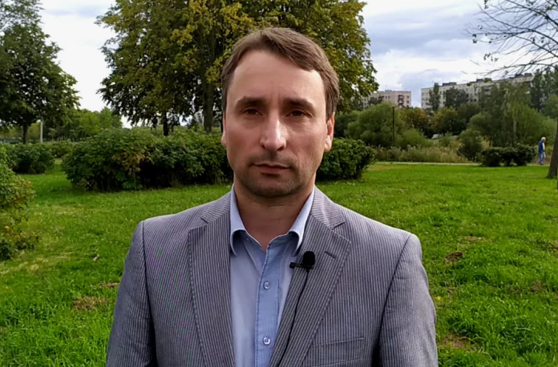

Из ИСКОВОГО ТРЕБОВАНИЯ (о компенсации морального вреда в связи с распространением СМИ порочащих, оскорбительных сведений, с посягательством на честь, достоинство, деловую репутацию Сергея Викторовича Грибалёва)
Данное исковое требование предъявляется Истцом Сергеем Викторовичем Грибалёвым стороне Ответчика – главному редактору издания online47.ru Бурмакиной Кристине Александровне для компенсации морального вреда, созданного распространением на сайте издания стороны Ответчика следующей статьи:
Данная статья, датируемая мартом 2020 года, вероятно используется стороной Ответчика как базовая площадка для рекламирования других подобных статей, ссылок для их анонсов, ссылок на социальные сети для тиражирования подобных статей – в частности, в случаях, где общественная экологическая деятельность по защите благоприятных природных условий проживания для человеческого общества критикуется и высмеивается.
Ранее Истцу стало известно, что в сети Интернет в аккредитованном СМИ «Зелёная правда» была опубликована статья с одноименным названием «Жертва амбиций: Как обиженный экопровокатор Сергей Грибалев докатился до жизни такой жизни» Статья на greentruth.ru
В настоящем случае фиксация факта распространения стороной Ответчика осуществлена 15 ноября 2024 года в Санкт-Петербурге в нотариальной конторе Остапенко Елены Константиновны. Протокол осмотра доказательств 78 АВ 6087984. Безотлагательно получена информация о владельце домена и список его первичных DNS-серверов.
Ответчиком в указанной статье распространены недостоверные и порочащие сведения относительно профессиональной, общественной деятельности и личной жизни Сергея Викторовича Грибалёва. Далее подобную информацию и/или ссылки на данную статью указывает и другой ресурс, учредителем которых является также АО «ЛОТ». («Общая газета Ленинградской области» og47.ru).
Распространенные в статье сведения не соответствуют действительности и порочат честь, достоинство и деловую репутацию Сергея Викторовича Грибалёва с несанкционированным использованием личного архива фотографий из социальной сети vkontakte.ru vk.com/draakon2000.
Порочащий характер сведений заключается том, что Грибалева С.В. в утвердительной форме называют мошенником, жуликом, лжецом, экопровокатором (что отражено в нотариально заверенной распечатке статьи).
Сведения данной статьи не соответствуют в действительности в целом. Зафиксировано публичное распространение сведений в открытом доступе в сети Интернет по заданным поисковым словам, по фамилии Истца.
Истец приводит, в частности, отдельные сведения, для понимания недостоверного характера сведений в указанной статье:
- Отсутствие судимости у Грибалёва С.В.
- Отсутствие выговоров на работе, увольнение по сокращению Грибалёва С.В.
- Указана неверная специальность «Экогеология» (вместо «Геоэкология»)
В результате распространения недостоверных и порочащих репутацию сведений истцу причинены моральные, нравственные страдания и нанесён материальный ущерб от разрыва некоторых отношений с отдельными партнёрами – в результате ознакомления с данной статьей.
За небольшой промежуток времени в СМИ были распространены не соответствующие действительности, порочащие деловую репутацию, а также честь и достоинство Сергея Викторовича Грибалёва сведения, содержащиеся в нижеуказанных статьях.
Факт распространения сведений подтверждается нотариальным протоколом осмотра доказательств от 15.11.2024 года. Порочащий характер распространенных сведений подтверждается лингвистическим исследованием, которое проводилось Светланой Григорьевной Курафеевой. Лингвистический анализ произведен учителем русского языка и литературы высшей категории, имеющей стаж 44 года, заслуженного работника Просвещения Российской Федерации, сурдопедагогом и логопедом высшей категории Светланой Григорьевной Курафеевой.
Полные тексты оспариваемых статей содержатся в вышеуказанных нотариальном протоколе осмотра доказательств. Как следствие этой публикации в широком доступе распространяется ложная клеветническая информация с использованием фотографий из личного архива относительно Человека, профессиональной и общественной деятельности Сергея Викторовича Грибалёва.
При этом налицо заказной характер информационной травли и распространение недостоверной фейковой информации- статей-вбросов вероятно, преступной группой лиц, саботирующих экологическое развитие нашей страны.
Действия, направленные на возбуждение ненависти либо вражды, а также на унижение достоинства человека
Действия, направленные на возбуждение ненависти либо вражды, а также на унижение достоинства человека либо группы лиц по признакам пола, расы, национальности, языка, происхождения, отношения к религии ...
2. Действия, направленные на возбуждение ненависти либо вражды, а также на унижение достоинства человека либо группы лиц по признакам пола, расы, национальности, языка, происхождения, отношения к религии, а равно принадлежности к какой-либо социальной группе, совершенные публично, в том числе с использованием средств массовой информации либо информационно-телекоммуникационных сетей, включая сеть "Интернет": а) с применением насилия или с угрозой его применения.
Экстремизм
Экстремизм – это приверженность к крайним взглядам, позициям и мерам в общественной деятельности, выражается в различных формах, начиная от проявлений, не выходящих за конституционные рамки, и заканчивая такими острыми и общественно опасными формами, как провокация беспорядков, гражданское неповиновение, мятеж, повстанческая деятельность, террористические акции. Экстремизм более широкое понятие т. к. террористические акции, терроризм - это только одна из форм экстремизма.
За осуществление экстремистской деятельности предусмотрена уголовная, административная и гражданско-правовая ответственность. Преступлениями экстремистского характера являются:
- статья 280 УК РФ - публичные призывы к осуществлению экстремистской деятельности;
- статья 282 УК РФ - возбуждение ненависти либо вражды, а равно унижение человеческого достоинства;
- статья 282.1 УК РФ - организация экстремистского сообщества;
- статья 282.2 УК РФ - организация деятельности экстремистской организации.
В Кодексе об административных правонарушениях Российской Федерации имеются три статьи, предусматривающие ответственность за совершение правонарушения экстремистского характера. Это статья 20.3 - пропаганда и публичное демонстрирование нацистской атрибутики или символики, статья 20.29 - производство и распространение экстремистских материалов и 20.3.1 – возбуждение ненависти либо вражды, а равно унижение человеческого достоинства, если эти действия не содержат уголовно наказуемого деяния.
Лингвистический анализ публикации
В статье приводятся также высказывания от имени Сергея Викторовича Грибалёва, однако сведений о том, кому и когда, при каких обстоятельствах они были сказаны, в публикации не содержится. Они умаляют честь и достоинство С.В. Грибалёва, так как создают образ недалёкого человека, выскочки, который не уважает людей, непрофессионально относится к решению поставленных задач.
Автор публикации создает имплицитное (подтекстное) сообщение о надуманности проблем, исходящих от С.В. Грибалёва, используя речевые средства с семантическим компонентом «псевдо-».
В публикации сообщается, что вся деятельность С.В. Грибалёва – «мыльный пузырь», эта информация имеет форму утверждения о факте. Автор публикации утверждает, что фактов такого рода может привести намного больше. Данная информация имеет статус утверждения о факте множества нарушений и псевдодеятельности С.В. Грибалёва.
Краткая рецензия на статью «Жертва амбиций: Как обиженный экопровокатор Сергей Грибалев докатился до жизни такой» Статья на online47.ru
Мнение автора и его влияние
Опубликовав свои пасквили, автор, вероятно, не понял, что таким образом он мерзко поступил в первую очередь по отношению к себе. И сравнение по принципу «я хороший – ты плохой» сработало наоборот.
Откровенно выражая свое мнение убогими высказываниями, с таким восторгом упивался своей исключительностью, эрудицией, что у читателей статьи появлялось мнение, что автору далеко до Мужчины с Честью и Совестью.
Таким образом, каждому кто до конца дочитал мерзкий пасквиль, может стать понятным, что во всех описанных ситуациях на высоте был именно уважаемый Мужчина с Честью и Совестью – Сергей Викторович Грибалёв, достойно исполняющий свой человеческий долг.
Лингвистический анализ
Лингвистический анализ был осуществлен с использованием толкового словаря русского языка С. И. Ожегова (Москва, издательство «Русский язык», 1984 год); словаря В.И. Даля «Толковый словарь живого Великорусского языка Владимира Даля» (Санкт-Петербург-Москва, издание книгопродавца типографа М.О. Вольфа, 1880 год); книги Л. В. Шустровой «Практическая стилистика русского языка: Учебное пособие для учащихся гимназий, лицеев и школ гуманитарного профиля» (Москва, издательство «Новая школа», 1994 год); книги Д.Э. Розенталя «Русский язык. Все правила с упражнениями (Москва, издательство «Мир и Образование», 2024 год).
Лингвистический анализ произведен учителем русского языка и литературы высшей категории, имеющей стаж 44 года, заслуженного работника Просвещения Российской Федерации, сурдопедагогом и логопедом высшей категории Светланой Григорьевной Курафеевой.
Юридическая позиция
Согласно п. 11 Обзора практики рассмотрения судами дел по спорам о защите чести, достоинства и деловой репутации, утв. Президиумом Верховного Суда Российской Федерации от 16 марта 2016 г., в том случае, когда невозможно установить лицо, распространившее порочащие сведения, заявление о признании таких сведений не соответствующими действительности рассматривается в порядке особого производства. Аналогичное разъяснение содержится также в п. 2 Постановления Пленума Верховного суда РФ от 24 февраля 2005 г. № 3 "О судебной практике по делам о защите чести и достоинства граждан, а также деловой репутации граждан и юридических лиц".
Надлежащим способом борьбы с недостоверными порочащими сведениями, размещенными в телеграмм-канале, является судебная процедура установления юридически значимых фактов. На заявителя возложена обязанность по доказыванию лишь двух обстоятельств: факта распространения сведений и их порочащий характер.
Журналистская этика
Что касается журналистской этики, то она также многократно была нарушена стороной Ответчика. Сторона Истца приводит выдержки из Кодекса профессиональной этики российского журналиста Союза журналистов России (Принят Конгрессом журналистов России 23 июня 1994 года):
- «3. Журналист распространяет и комментирует только ту информацию, в достоверности которой он убежден и источник которой ему хорошо известен...
- 5. Журналист полностью осознает опасность ограничения, преследования и насилия, которые могут быть спровоцированы его деятельностью...
Злоупотребление свободой массовой информации
Кроме того, сторона Ответчика в своих действиях должна была учитывать, что за злоупотребление свободой массовой информации наступает ответственность в соответствии с Законом РФ от 27.12.1991 N 2124-1 (ред. от 11.03.2024) "О средствах массовой информации", а именно:
- Статья 59. Ответственность за злоупотребление свободой массовой информации...
Требования Кредитора-Истца
На основании изложенного, руководствуясь действующим законодательством, в частности, статьями 151-152, 1100 Гражданского кодекса РФ, статьями 131-132 Гражданского процессуального кодекса РФ, Кредитор-Истец требуют:
- Обязать Ответчика опровергнуть сведения, порочащие честь, достоинство и деловую репутацию Истца.
- Заплатить стороне Истца штраф за использование без разрешения фотографий из личного архива Истца в размере 2 000 000 рублей.
- Обязать сторону Ответчика выплатить сумму компенсации морального вреда в размере 10 000 000 рублей.
- Обязать Ответчика оплатить все судебные расходы, включая расходы на Представителя.